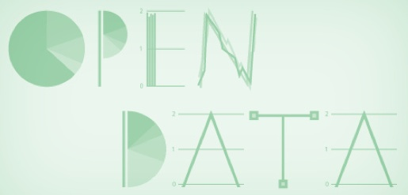
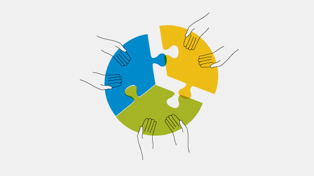

Καλωσήρθατε στο έργο BusinessPi

Open data / opensourceway / CC BY-SA
Το έργο BusinessPi αποτελεί συνδυασμό ανοικτού λογισμικού (μινιμαλιστικoύ LAMP stack και πλήρους VTiger CRM) και ανοικτού hardware (Pi-board), που συνδεόμενο στο τοπικό δίκτυο αυτοματοποιεί μια νέα εμπορική/υπηρεσιών η και εξαγωγική επιχείρηση (τηλέφωνα, ραντεβού, πωλήσεις, αποθήκη, υποστήριξη πελατών, γνωσιακή βάση κ.α.), με κόστος λιγότερο από 100 ευρώ (αγορά hardware).
Τις επόμενες μέρες θα αναρτηθούν όλα όσα έχουν συνταχθεί με σκοπό να καταγράψουμε και να μεταδώσουμε γνώσεις σχετικά με:
- Τεχνικές προδιαγραφές
- Μεθοδολογίες
- Λογισμικά
- Hardware
- Εμπειρικά δεδομένα
Τα παραπάνω καταγράφηκαν, συγκεντρώθηκαν και συντάχθηκαν πριν αλλά και κατά την διάρκεια ανάπτυξης του έργου BusinessPi προς όφελος την κοινότητας ΕΛ/ΛΑΚ με απώτερο σκοπό την Τυποποίηση των εργασιών που απαιτούνται για να μπορεί οποιοσδήποτε να αναπαράγει το έργο.
Τις επόμενες μέρες θα αναρτήσω οδηγούς, αναφορές, τεχνικές πληροφορίες για το υλικό (Hardware) αλλά και το λογισμικό (software) το οποίο χρησιμοποιήθηκε για την ανάπτυξη του έργου BusinessPi
Με την ανάγνωση των ενοτήτων, σκοπός είναι ο αναγνώστης να έχει μια πλήρη εικόνα των εργασιών και να μπορεί, εάν το επιθυμεί :
- Να δημιουργήσει το δικό του μικρό εταιρικό διακομιστή σε Pi Board
- Να μεταδώσει της γνώσεις στην κοινότητα ΕΛ/ΛΑΚ
- Να προτείνει νέες λύσεις
- Να συνδράμει στην βελτίωση και ανάπτυξη του έργου με την συμμετοχή του στην κοινότητα BusinessPi
Καλούμε όσους ενδιαφέρονται να εμπλουτίσουν, να προτείνουν ή γενικά να συνδράμουν σε οποιοδήποτε τμήμα του έργου να επικοινωνήσουν μέσω του Support

Puzzle pieces / ©opensource.com via Flickr / CC BY-SA
Σκοπός της κοινότητας
Σκοπός της κοινότητας BusinessPi είναι η προώθηση και ανάπτυξη:
- Ανοιχτών Προτύπων
- Ελεύθερου Λογισμικού
- Τεχνολογιών Ανοιχτής Αρχιτεκτονικής
- Διάδοση τεχνογνωσίας πληροφοριακών συστημάτων
στο χώρο των επιχειρήσεων στην Ελλάδα, ενώ παράλληλα φιλοδοξεί να αποτελέσει κέντρο γνώσης και πλατφόρμα διαλόγου για επαγγελματίες IT που εργάζονται αλλά και χρησιμοποιούν ανοιχτές τεχνολογίες στον χώρο εργασίας τους.
Με το έργο BusinessPi, προσπαθήσαμε να δημιουργήσουμε μια αρχική γνωσιακή βάση δεδομένων στην προσπάθειά μας να δώσουμε μια λύση συνδυασμού Hardware και Software, που αυτοματοποιεί μια νέα μικρή εμπορική/υπηρεσιών η και εξαγωγική επιχείρηση (τηλέφωνα, ραντεβού, πωλήσεις, αποθήκη, υποστήριξη πελατών, γνωσιακή βάση κ.α.), με κόστος λιγότερο από 100 ευρώ (για αγορά του hardware).
Παράλληλα στόχος είναι να γίνουν παρουσιάσεις (βλέπε για νέα στην ιστοσελίδα http://businesspi.github.io/) του έργου σε εκδηλώσεις της κοινότητας ΕΛ/ΛΑΚ στην Ελλάδα και ταυτόχρονα να προσεγγίσουμε ομάδες που ασχολούνται με την επιχειρηματικότητα, τα stαrtups και την πληροφορική γενικότερα.
Συνοψίζοντας, με το έργο BusinessPi ευελπιστούμε στην προσέλκυση ενδιαφερόμενων που θα συμμετέχουν στην κοινότητα BusinessPi για να:
- Διαδώσουμε το ΕΛ/ΛΑΚ στην επιχειρηματική κοινότητα
- Δημιουργήσουμε μια ενιαία αγορά υπηρεσιών ΕΛ/ΛΑΚ για ΜΜΕ
- Διευκολύνουμε τοπικούς επαγγελματίες της πληροφορικής να διαδώσουν το ΕΛ/ΛΑΚ, αποκομίζοντας ταυτόχρονα τα προς το ζην.
- Εμπλουτίσουμε την γνωσιακή βάση με τεκμηρίωση προερχόμενη από τις γνώσεις και εμπειρίες που αποκτήθηκαν κατά την υλοποίηση έργων ΕΛ/ΛΑΚ σε εταιρικά περιβάλλοντα.
Όσοι ενδιαφέρονται παρακαλούμε όπως διαβάσουν τις οδηγίες στην σελίδα Support